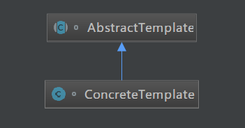
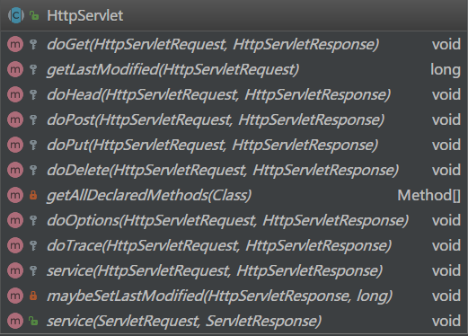

原文出处:本文由博客园博主知了一笑提供。
原文连接:https://www.cnblogs.com/cicada-smile/p/11864378.html
原文连接:https://www.cnblogs.com/cicada-smile/p/11864378.html
本文源码：GitHub·点这里 || GitEE·点这里
一、生活场景
通常一款互联网应用的开发流程如下：业务需求，规划产品，程序开发，测试交付。现在基于模板方法模式进行该过程描述。
public class C01_InScene {
public static void main(String[] args) {
DevelopApp developApp = new DevelopApp() ;
developApp.templateMethod() ;
}
}
/**
* 软件开发抽象类
*/
abstract class SoftDevelop {
public void templateMethod(){
//调用基本方法
doBiz ();
doProduct();
doDevelop();
doTest();
}
public abstract void doBiz () ;
public abstract void doProduct () ;
public abstract void doDevelop () ;
public abstract void doTest () ;
}
/**
* APP开发具体类
*/
class DevelopApp extends SoftDevelop {
@Override
public void doBiz() {
System.out.println("整理App业务");
}
@Override
public void doProduct() {
System.out.println("输出App产品");
}
@Override
public void doDevelop() {
System.out.println("进行App开发");
}
@Override
public void doTest() {
System.out.println("进行App测试");
}
}二、模板方法模式
1、基础概念
模板方法模式是类的行为模式。准备一个抽象类，将部分逻辑以具体方法以及具体构造函数的形式实现，然后声明一些抽象方法来迫使子类实现剩余的逻辑。不同的子类可以用不同的方式实现这些抽象方法，从而对剩余的逻辑有不同的实现。简单说，模板方法模式定义流程中的核心的框架，而将实际的业务操作延迟到子类中，使得子类可以不改变流程的结构，但可以重定义业务程序。
2、模式图解

3、核心角色
- 抽象模板角色
类中实现了模板方法(template)，定义流程结构，具体业务需求子类需要去实现。
- 具体模板角色
实现父类所定义的一个或多个抽象方法，是整个流程的组成方法。抽象模板角色都可以有任意多个具体模板角色与之对应，具体模板角色都可以给出这些抽象方法的不同实现。
4、源码实现
/**
* 抽象模板角色
*/
abstract class AbstractTemplate {
/**
* 模板方法
*/
public void templateMethod(){
//调用基本方法
abstractMethod();
hookMethod();
concreteMethod();
}
/**
* 相关基本方法
*/
protected abstract void abstractMethod();
protected void hookMethod(){}
private final void concreteMethod(){}
}
/**
* 具体模板角色
*/
class ConcreteTemplate extends AbstractTemplate{
/**
* 基本方法的实现
*/
@Override
public void abstractMethod() {
}
/**
* 重写父类的方法
*/
@Override
public void hookMethod(){
}
}5、不同方法描述
- 模板方法
定义在抽象类中的，把基本操作方法组合在一起形成一个总流程的方法，可以有任意多个模板方法。
- 基本方法
- 抽象方法：抽象方法由抽象类声明，由具体子类实现。
- 具体方法：具体方法由抽象类声明并实现，而子类并不实现。
- 钩子方法：钩子方法由抽象类声明并实现，而子类可以加以扩展。
三、JavaEE应用

HttpServlet担任抽象模板角色，模板方法：由service()方法担任。基本方法：由doPost()、doGet()等方法担任。service()方法流程，省略了部分判断逻辑。该方法调用七个do方法中的一个或几个，完成对客户端请求的响应。这些do方法需要由HttpServlet的具体子类提供，在JavaEE中使用时，通常会自己实现相关方法。在API的封装是典型的模板方法模式。
protected void service(HttpServletRequest req, HttpServletResponse resp)
throws ServletException, IOException {
if (method.equals("GET")) {
this.doGet(req, resp);
} else if (method.equals("HEAD")) {
this.doHead(req, resp);
} else if (method.equals("POST")) {
this.doPost(req, resp);
} else if (method.equals("PUT")) {
this.doPut(req, resp);
} else if (method.equals("DELETE")) {
this.doDelete(req, resp);
} else if (method.equals("OPTIONS")) {
this.doOptions(req, resp);
} else if (method.equals("TRACE")) {
this.doTrace(req, resp);
} else {
String errMsg = lStrings.getString("http.method_not_implemented");
Object[] errArgs = new Object[]{method};
errMsg = MessageFormat.format(errMsg, errArgs);
resp.sendError(501, errMsg);
}
}四、源代码地址
GitHub·地址
https://github.com/cicadasmile/model-arithmetic-parent
GitEE·地址
https://gitee.com/cicadasmile/model-arithmetic-parent：模板方法模式2.png)